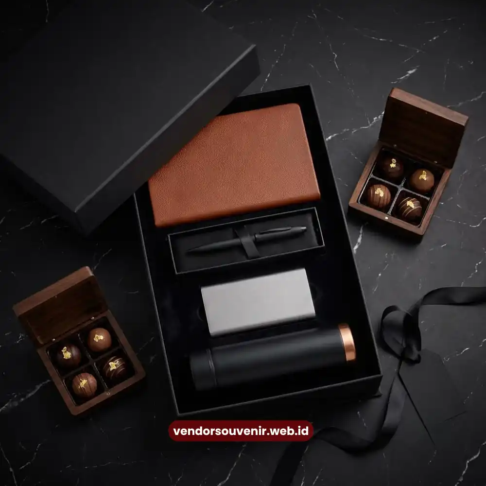

Daftar Isi
Paket seminar kit eksklusif adalah satu set perlengkapan seminar bermerek yang berisi kombinasi alat tulis, tas, dan aksesori pendukung untuk peserta acara korporat. Paket ini dirancang khusus untuk memperkuat identitas brand perusahaan sekaligus memberi kesan profesional kepada tamu, klien, atau mitra bisnis.
Kebutuhan terhadap seminar kit yang tampil eksklusif terus meningkat seiring bertumbuhnya sektor pertemuan, insentif, konvensi, dan pameran (MICE) di Indonesia. Perusahaan tidak lagi memandang seminar kit sebagai pelengkap acara semata, melainkan sebagai bagian dari strategi branding yang terukur. Semakin banyak fungsi dan kualitas material yang dibawa, semakin tinggi pula nilai persepsi merek di mata peserta.
Artikel ini membahas secara menyeluruh apa saja komponen ideal dalam paket seminar kit eksklusif, mengapa paket ini penting untuk citra perusahaan, faktor yang memengaruhi kualitasnya, hingga cara memesannya secara custom sesuai kebutuhan acara Anda.
- Paket seminar kit eksklusif menggabungkan fungsi praktis dan branding perusahaan dalam satu set souvenir.
- Komponen umum meliputi tas, notes, pulpen, tumbler atau botol minum, dan flashdisk atau power bank.
- Kualitas material dan finishing logo menentukan persepsi profesionalisme perusahaan di mata peserta.
- Paket dapat dipesan secara custom sesuai anggaran, tema acara, dan jumlah peserta.
- VendorSouvenir menyediakan paket seminar kit eksklusif dengan opsi personalisasi logo dan pengerjaan sesuai tenggat acara.
Apa Itu Paket Seminar Kit Eksklusif?
Paket seminar kit eksklusif adalah bundel souvenir yang dirancang khusus untuk peserta seminar, workshop, pelatihan, atau konferensi korporat, dengan standar material dan tampilan yang lebih tinggi dibandingkan seminar kit reguler. Perbedaan utamanya terletak pada pemilihan bahan, konsistensi tema warna, serta detail branding logo perusahaan yang diaplikasikan secara rapi di setiap item.
Paket ini umumnya dipesan oleh divisi General Affair, Human Resources, atau Event Organizer yang menangani acara internal maupun eksternal perusahaan. Tujuannya bukan hanya memenuhi kebutuhan fungsional peserta selama acara berlangsung, tetapi juga menciptakan kesan pertama yang kuat sejak peserta menerima kit tersebut.
Mengapa Disebut Eksklusif?
Istilah eksklusif pada seminar kit merujuk pada kombinasi tiga aspek: kualitas material yang di atas rata-rata, desain custom yang tidak pasaran, dan jumlah produksi yang biasanya terbatas sesuai jumlah peserta acara. Berbeda dengan souvenir massal yang diproduksi generik, seminar kit eksklusif dirancang agar selaras dengan identitas visual perusahaan, mulai dari warna, tipografi logo, hingga jenis bahan yang dipilih.
Mengapa Perusahaan Membutuhkan Seminar Kit Eksklusif?
Seminar kit bukan sekadar pelengkap acara. Bagi banyak perusahaan, kit ini menjadi media branding yang terus dipakai peserta lama setelah acara selesai, terutama jika berupa tumbler, tas, atau alat tulis berkualitas.
Memperkuat Brand Recall Peserta
Ketika peserta menggunakan tumbler atau tas berlogo perusahaan dalam aktivitas sehari-hari, mereka secara tidak langsung menjadi media promosi berjalan. Semakin sering item tersebut digunakan, semakin besar peluang logo perusahaan diingat oleh peserta maupun orang di sekitarnya.
Meningkatkan Kesan Profesional di Mata Klien dan Mitra
Untuk acara yang mengundang klien eksternal atau mitra bisnis, kualitas seminar kit turut memengaruhi persepsi terhadap kredibilitas perusahaan penyelenggara. Paket yang tampil rapi dan bermaterial baik memberi sinyal bahwa perusahaan memperhatikan detail dan menghargai tamunya.

Contoh Seminar Kit Eksklusif
Mendukung Konsistensi Identitas Acara
Seminar kit yang dirancang selaras dengan tema acara, mulai dari warna hingga desain kemasan, membantu menciptakan pengalaman acara yang lebih terpadu dan mudah diingat oleh peserta.
Apa Saja Komponen Umum dalam Paket Seminar Kit Eksklusif?
Komposisi paket dapat disesuaikan dengan anggaran dan kebutuhan acara, namun sejumlah item berikut umumnya menjadi standar dalam paket seminar kit eksklusif.
- Tas seminar atau totebag dengan sablon atau bordir logo perusahaan
- Notebook atau notes custom cover dengan finishing hardcover atau softcover premium
- Pulpen custom logo, mulai dari model metal hingga plastik premium
- Tumbler atau botol minum stainless dengan cetak logo
- Flashdisk custom logo atau power bank sebagai item bernilai tambah
- Lanyard dan ID card holder untuk kebutuhan identifikasi peserta
Kombinasi item ini dapat disesuaikan lagi dengan anggaran per peserta, jumlah total peserta, serta jenis acara, apakah seminar internal, workshop eksternal, atau konferensi berskala besar.
Bagaimana Faktor Harga Seminar Kit Eksklusif Ditentukan?
Harga paket seminar kit eksklusif umumnya dipengaruhi oleh beberapa faktor utama, yaitu jenis dan kualitas bahan, jumlah item dalam satu paket, teknik branding logo yang digunakan seperti sablon, bordir, atau UV print, serta jumlah total pesanan. Semakin besar jumlah pesanan, umumnya semakin kompetitif harga per unitnya karena efisiensi produksi massal.
Selain itu, tenggat waktu pengerjaan turut memengaruhi biaya. Pesanan dengan tenggat sangat mendesak dapat dikenakan biaya tambahan karena membutuhkan prioritas jalur produksi.
Bagaimana Proses Kustomisasi Logo pada Seminar Kit?
Kustomisasi logo menjadi elemen penting yang membedakan seminar kit eksklusif dari souvenir generik. Proses ini umumnya diawali dengan konsultasi desain, penyesuaian ukuran dan posisi logo pada tiap item, pemilihan teknik cetak yang sesuai dengan material, hingga proses sampel sebelum produksi massal dilakukan.
Perusahaan dengan kebutuhan acara skala besar, seperti seminar nasional atau gathering multi-cabang, umumnya membutuhkan konsistensi warna logo di seluruh item agar identitas brand tetap seragam.
Kesalahan Umum saat Memesan Seminar Kit Korporat
Beberapa kesalahan berikut sering ditemui saat perusahaan mempersiapkan seminar kit untuk acara mereka.
Pertama, menentukan jumlah item tanpa mempertimbangkan anggaran per peserta secara menyeluruh, sehingga kualitas material terpaksa dikorbankan. Kedua, kurang memperhitungkan waktu produksi, terutama untuk pesanan dengan jumlah besar atau teknik branding yang membutuhkan waktu lebih lama seperti bordir. Ketiga, tidak melakukan pengecekan sampel sebelum produksi massal, yang berisiko menimbulkan ketidaksesuaian warna logo atau kualitas cetak pada hasil akhir.
Bagaimana Cara Memesan Paket Seminar Kit Eksklusif?
Proses pemesanan umumnya diawali dengan konsultasi kebutuhan acara, termasuk jumlah peserta, anggaran, dan tema acara. Selanjutnya tim produksi akan membantu menyusun komposisi item yang sesuai, memberikan opsi desain custom logo, serta memberikan estimasi waktu pengerjaan sebelum pesanan dikonfirmasi.
VendorSouvenir menyediakan layanan konsultasi paket seminar kit eksklusif secara custom, mulai dari pemilihan item, desain logo, hingga pengiriman ke lokasi acara. Bagi perusahaan yang sedang mempersiapkan seminar, workshop, atau gathering korporat, tim VendorSouvenir siap membantu menyusun paket yang sesuai dengan identitas brand dan anggaran perusahaan Anda.
Paket seminar kit eksklusif adalah investasi branding yang memberi manfaat ganda, yaitu mendukung kelancaran acara sekaligus memperkuat identitas perusahaan di mata peserta. Pemilihan komponen, kualitas material, dan teknik branding logo yang tepat akan menentukan seberapa besar dampak positif yang dirasakan setelah acara berlangsung.
Jika perusahaan Anda sedang merencanakan seminar atau acara korporat dalam waktu dekat, segera konsultasikan kebutuhan seminar kit eksklusif Anda bersama VendorSouvenir. Tim kami siap membantu menyusun paket custom logo yang sesuai dengan anggaran dan tenggat acara Anda.

Solusi Gift Set dari Vendor Terpercaya
Butuh Bantuan Merancang Seminar Kit?
Tim ahli kami siap membantu Anda menyusun paket seminar kit eksklusif yang menarik.
Pilihan barang akan disesuaikan dengan ketersediaan budget dan kebutuhan Anda.
Dapatkan penawaran harga terbaik untuk pesanan massal!
FAQ Seputar Paket Seminar Kit Eksklusif
Apa itu paket seminar kit eksklusif?
Paket seminar kit eksklusif adalah bundel souvenir korporat berkualitas premium yang berisi item seperti tas, notes, pulpen, dan tumbler dengan branding logo perusahaan untuk peserta seminar atau acara korporat.
Apa saja isi standar dalam seminar kit eksklusif?
Isi standar umumnya mencakup tas seminar, notebook, pulpen custom, tumbler atau botol minum, serta flashdisk atau power bank, yang dapat disesuaikan dengan anggaran dan tema acara.
Berapa lama proses produksi paket seminar kit eksklusif?
Lama produksi bervariasi tergantung jumlah item, teknik branding logo yang dipilih, dan jumlah total pesanan, sehingga sebaiknya dikonsultasikan lebih awal sebelum tanggal acara.
Apakah logo perusahaan bisa dicetak di semua item seminar kit?
Sebagian besar item dalam seminar kit eksklusif dapat dicustom dengan logo perusahaan menggunakan teknik cetak yang disesuaikan dengan jenis materialnya, seperti sablon, bordir, atau UV print.
Bagaimana cara memesan paket seminar kit eksklusif custom logo?
Perusahaan dapat menghubungi VendorSouvenir untuk konsultasi kebutuhan acara, jumlah peserta, dan anggaran, sebelum tim menyusun proposal paket dan desain logo yang sesuai.
Maroon Souvenir
Partner Corporate Gift terpercaya di Indonesia. Berpengalaman melayani ratusan perusahaan sejak 2018.
Lihat Portofolio Kami